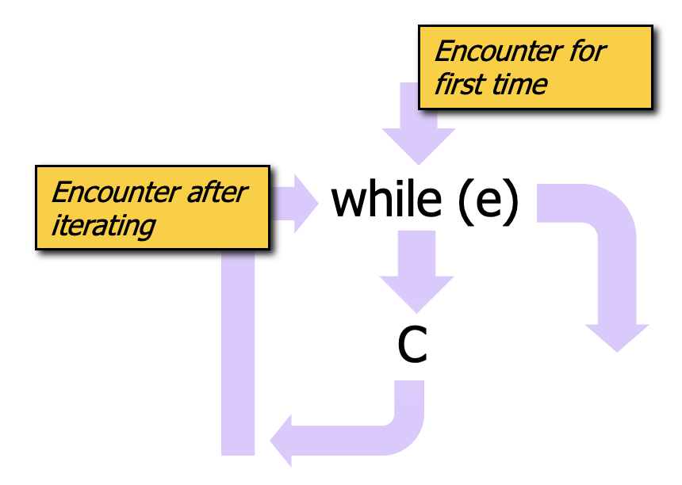
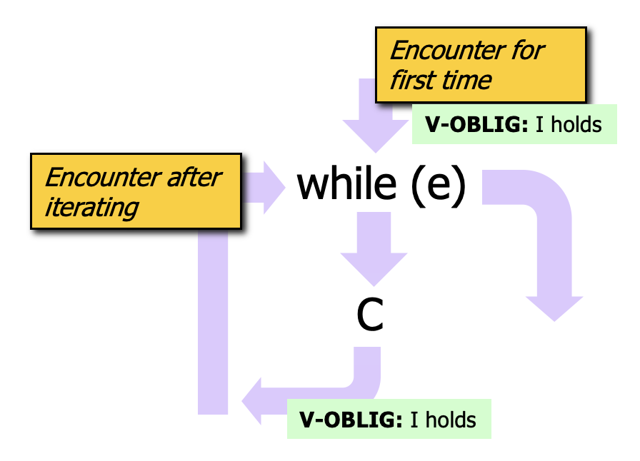

Motivation
Consider the following program which multiples m by n by repeated addition.
1// #Sireum
2import org.sireum._
3
4val m = Z.random // we will compute m * n where n >= 0
5val n = Z.random
6assume(n >= 0)
7
8var i: Z = 0 // loop index
9var r: Z = 0 // result value
10while (i < n) {
11 r = r + m // accumulate repeated additions
12 i = i + 1 // increment loop index
13}
14
15println(s"m = ${m}, n = ${n}, r = ${r}")
16
17assert(r == m * n)
We’d like to verify the assertion at the end of the program. Since the assertion depends on the values of r, m, n, we need to know the values of those variables at the point of the assertion. Understanding the values for m and n is easy since they’re immutable variables and their values are set at the initializations at TBD: lines X and Y. Knowing the value of r is challenging for several reasons:
-
its value may originate at the initialization at TBD: line X or the computation within the
whilebody at TBD: line X, depending on the path of execution, and -
its difficult to know
r’s value at TBD: line X, even in terms of a set of constraints, because it depends on the number times that the loop iterates (which depends onnwhose value is not known).
With the if statement, our knowledge of variable values also had to consider the possibility that different control paths could be followed, but we were able to reason fairly easily because we could break things into exactly two cases: (1) the case of the true branch executing, and (2) the case of the false branch executing. Then, our facts could be conditioned on the test expression:
<test expression> ->: <fact from the true branch>
!<test expression> ->: <fact from the false branch>
The challenge with the while is that, in general, we do not have a fixed number of cases where the bound on the number of cases can be predicted. Instead, we have…
- case 0: the loop is bypassed and never executed because the test expression is not true upon first encountering the while loop
- case 1: the loop executes one time,
- case 2: the loop executes two times,
- ...
There are some special situations, e.g., when the loop bound is known and it is fairly small, where it is reasonable to prove the program correct by considering the finite number of scenarios associated with the loop iterations (we will discuss that more later on). However, for the general case, we use what are called “loop invariants”, introduced by the classic works on program verification (TBD: expand a bit more).
With the loop invariant approach,
- the programmer helps the verification process by explicitly stating some facts (the loop invariant) that are believed to summarize the behavior of the
whileloop, - the loop body code is then proven to conform to the loop invariant,
- then, after the loop, whenever we need knowledge about variables that are updated by the loop, we use the facts from the loop invariant.
To motivate how loop invariants will be used in deductions, let us consider systematically the execution patterns associated with the while loop.

The figure provides a schema of execution paths associated with a while loop with test expression e and body C. The schema illustrates that there are two ways for execution to enter the while loop:
- enter upon encountering the loop for the first time, and
- enter after iterating through the loop for some number of iterations.
The schema also illustrates that there are two ways to complete (i.e., move past) the while loop:
- the loop is encountered for the first time, the test expression evaluates to false, and so the body is never entered – execution immediately moves to a statement after the loop, and
- the loop is encountered, the test expression evaluates to true, and then the body of the loop is executed some number of times until the test expression is false. Then execution moves to a statement after the loop.
Consider that we will need to know some facts about the loop’s effects at a statement after the loop. If we embrace the loop invariant concept of a set of facts that summarize the behavior of the loop, that summary should cover the two completion scenarios above: the invariant should hold (a) if we never executed the loop body and also (b) if we executed the loop body some number of times (note that it should hold regardless of the number of times the body was executed). For this to work, in our verification activites, we have obligations to show that the loop invariant holds at two different points, as shown in the figure below.

- To cover the scenario where the body is never executing, we need to show that the invariant holds when we first encounter the loop.
- To cover the case where the body is executed some number of times, we need to show that the invariant holds true at the end of the body. In the event that we exit the loop, we will know that the invariant holds.